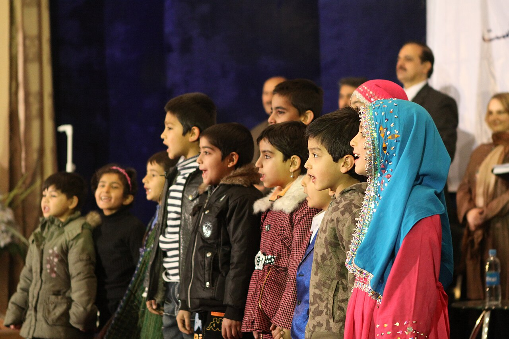

GRIEVANCE XXIX ◆ MORAL OBLIGATION
He has withdrawn life-preserving assistance from the vulnerable, leaving preventable suffering in its wake.
THE RECORD SHOWS
The dismantling of USAID and abrupt aid reductions disrupted health services abroad, with PBS reporting deadly consequences in Uganda and Afghanistan.

The administration says it is replacing the previous aid structure with smaller, country-led arrangements. On-the-ground reporting documents interrupted medical services and disease-related deaths. Precise global mortality estimates are contested and are not asserted here as measured facts.
A DOCUMENTED SEQUENCE
3 MILESTONES- 2025The administration rapidly curtailed USAID programs and moved to withhold previously appropriated foreign-assistance funds.
- September 2025A federal appellate ruling limited the administration’s continued withholding of foreign-aid funds.
- April–August 2026PBS reported that clinics and disease programs in Uganda and Afghanistan faced serious interruptions and documented suffering.